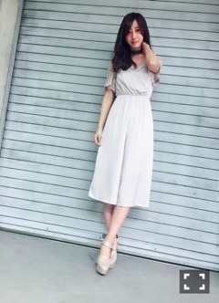

| 2016/06 05 Sun | 斎藤ちはる 怪奇現象起きたの。リビングの壁に掛けてある、マリメッコのパネルが遠く離れた床に置いてあったの。何故だろう。誰も触ってないって。飛んだのかな。(´>∀<｀)ゝ |
ちはるーむへようこそ！！
飛んだのだよね。そりゃたまにはパネルだって飛びたくなるよね。分かるよ〜気持ち。
だけど勝手に飛ぶのだけはやめて欲しいな。
誰も知らないなんて、そんな勝手なことはしないでよ。
いや、本当の話、だれが置いたの？
怖いよ。犯人よ、名乗りを上げて！
フライアウェイ！！
切り替えまして
今日は14thラストの個別握手会だったよ！
隣が欅ちゃんだったらしく、
挨拶しに来てくれたよ\( ˆoˆ )/
サイレントマジョリティー好きでよく聞いてるよ〜♪
気になってた土生ちゃんと写真撮っちゃった♡
背高くて可愛かったな(﹡ˆ ˆ﹡)
他にも、ねるちゃんと、べりさちゃんとも
写真撮ったからまた載せるね〜♪
ということで！
今日はハルジオンが咲く頃、ラストの個別握手会でした〜
4部

ロンパースは EAT ME で、
靴はsnidel♡
少しドレッシーな感じ！
でもすごい着心地よくて楽チンなんだ〜
5部
左手の指の包帯がやけに目立つ！
包帯なんか気にしないで服をみて！服を！
オフショルトップスは EMODAで
ドットのスカートは Honey Cinnamonだよ♪
オフショルトップスは黒で短めだからどんな服にも合わせやすい！
このドットのスカートも本当に合わせやすくて
可愛いけど、タイトだから少し大人っぽくもなれるアイテムなんだよ！
そして前々回のブログでアンケート取った、
気になるチョーカーの投票結果は！？
ででん
1位 5つめ！(リボンver.が多数)
2位 1つめ！(太めのレース)
3位 3つめ！(クール系レザー)
4位 4つめ！(白チョーカー)
5位 2つめ！(細バラレース)
という結果になりました\( ˆoˆ )/
コメントひとつひとつ集計したよ！
ということで、
4部に2位だった1つめのチョーカーを着け、
5部に1位だった5つめのチョーカーを着けたんだ〜
わ〜数字多すぎてよくわからないね〜
私もよくわからなくなってきたよ〜
4部の、太めのレースチョーカー。
これはEAT MEのものだよ！
5部の、リボンチョーカー。
Lily Brownのものだよ！
って、撮るの忘れたの。。
全身写真を縮めて見てみてね。。
ごめんね。。お手数ですよね。。
せっかくの1位なのになんで撮らなかった！？って、おこだよね。。ぷんぷんだよね。。
また着けたら取るからね。。
ちなみに、今日着けてなかった他のチョーカーも見たい！っていう声が多かったから
また握手会でも着けるし、
握手会私服がしばらくないと思うから
ブログにもモバメにも写真たくさん載せるね♡
そして14thの握手会今日がラスト！
今回も相変わらず楽しかった。
幸せな時間をありがとう。
元気を貰えるよ！頑張ろうって思えるよ！
15thでは大幅に部数が減ってしまった。
悔しいよ、悔しいけど、
弱音吐いてたら前になんて進めないから。
この結果を真摯に受け止めて、また歩んでいくね。
会いに来てくれると嬉しいな。
15thの前にはアルバム個別握手会もあるから！
また握手してお話できるのを楽しみにしてるからね(｡･o･｡)ﾉ
仲良し〜純奈〜じゅんちゃんって呼んでるよ〜
じゅんちゃんとは波長が凄く合うよ〜
じゅんちゃんとなら空も飛べそうだ〜
フライアウェイ
お風呂に入ってくるよ
フライアウェイ
斎藤家の歌、4番の歌詞待ってるよ
何度でも何度でも待ってるよ
フライアウェイ
フライアウェイっていい言葉だね。
使いやすい。
斎藤ちはる